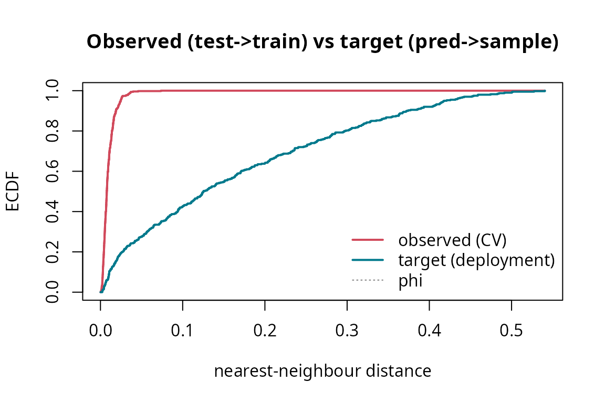

Detecting and quantifying spatial leakage with spLeakage
Source:vignettes/spLeakage.Rmd
spLeakage.RmdspLeakage audits a train/test split: it
does not generate folds (that space is covered by CAST,
blockCV, spatialsample). Given a split, a
prediction target, and the data, it answers three questions:
-
Is there leakage, and how much? — the signed
Spatial Leakage Index (
SLI). -
So how inflated are my numbers? —
estimate_optimism(). -
What should I have done? —
recommend_validation().
The guiding idea: leakage and optimism are only well-posed relative to a declared sampling design, estimand, and prediction target.
A clustered sample (the canonical leakage regime)
set.seed(3)
nc <- 8
centers <- cbind(runif(nc, 0.1, 0.9), runif(nc, 0.1, 0.9))
cl <- sample(nc, 500, replace = TRUE)
xy <- centers[cl, ] + cbind(rnorm(500, 0, 0.04), rnorm(500, 0, 0.04))
d <- data.frame(x = pmin(pmax(xy[, 1], 0), 1), y = pmin(pmax(xy[, 2], 0), 1))
d$z <- sin(2 * pi * d$x) + cos(2 * pi * d$y) + rnorm(500, 0, 0.15)We will map wall-to-wall over the unit square:
s <- seq(0.025, 0.975, length.out = 20)
tgt <- prediction_target(grid = as.matrix(expand.grid(x = s, y = s)), type = "grid")1. Detect leakage in a random 80/20-style 10-fold split
folds <- sample(rep_len(1:10, nrow(d)))
lk <- detect_leakage(d, split = folds, target = tgt, response = "z",
coords = c("x", "y"), n_boot = 300)
lk
#> <leakage_diagnosis>
#> target : grid | n = 500, test = 500, folds = 10
#> SLI_rho (signed) : +0.138 [OPTIMISTIC leakage] 90% CI [+0.106, +0.185]
#> SLI_d (signed) : +0.053 (A = +0.1539, phi = 2.883) 90% CI [+0.040, +0.076]
#> retained corr. : c_obs = 0.990 vs c_pred = 0.852
#> W (NNDM) / delta : 0.1539 / +1.00
plot(lk) # observed (CV) vs target (deployment) NN-distance ECDFs
A positive SLI_rho whose interval excludes zero means
the split is optimistically leaking.
plot(lk, which = "map") shows where.
2. Quantify the optimism
opt <- estimate_optimism(d, split = folds, response = "z", coords = c("x", "y"),
control = "block")
opt
#> <optimism_estimate>
#> metric / control : RMSE / block
#> user CV error : 0.1965
#> controlled error : 0.4364
#> optimism : +0.2399 (+55.0% of controlled) [OPTIMISTIC (reported accuracy inflated)]The reported (random-CV) error is compared against a leakage-controlled, design-matched scheme. The gap is the optimism — here a large positive inflation.
3. Get a design-aware recommendation
Declare the estimand and design (the design cannot be inferred from coordinates):
recommend_validation(d, estimand = "prediction", design = "clustered",
target = "grid", coords = c("x", "y"))
#> <validation_recommendation>
#> estimand / design / target : prediction / clustered / grid
#> spatial CV appropriate : YES
#> recommended:
#> - NNDM / kNNDM CV
#> - Spatial block CV
#> avoid: Random k-fold CV (optimistic under spatial autocorrelation)
#> clustering flag (risk only): NN index = 0.71 (clustered)
#> rationale: Conditional predictive skill from a clustered sample for a 'grid' target: match the CV geometry to deployment (NNDM/kNNDM/buffered) so test points are as far from training as prediction points are from the sample.For a probability sample the advice flips — random CV becomes correct and spatial CV is over-pessimistic:
recommend_validation(estimand = "prediction", design = "probability", target = "grid")
#> <validation_recommendation>
#> estimand / design / target : prediction / probability / grid
#> spatial CV appropriate : NO
#> recommended:
#> - Random CV (unbiased for a probability sample)
#> avoid: Forcing spatial CV (over-pessimistic here)
#> rationale: For a probability sample, random CV gives unbiased predictive skill; spatial CV would be pessimistic.Put it together: a scorecard
rec <- recommend_validation(d, estimand = "prediction", design = "clustered",
target = "grid", coords = c("x", "y"))
report_leakage(lk, optimism = opt, recommendation = rec)
#> ================ spLeakage report ================
#> Leakage grade : C
#> --------------------------------------------------
#> <leakage_diagnosis>
#> target : grid | n = 500, test = 500, folds = 10
#> SLI_rho (signed) : +0.138 [OPTIMISTIC leakage] 90% CI [+0.106, +0.185]
#> SLI_d (signed) : +0.053 (A = +0.1539, phi = 2.883) 90% CI [+0.040, +0.076]
#> retained corr. : c_obs = 0.990 vs c_pred = 0.852
#> W (NNDM) / delta : 0.1539 / +1.00
#>
#> <optimism_estimate>
#> metric / control : RMSE / block
#> user CV error : 0.1965
#> controlled error : 0.4364
#> optimism : +0.2399 (+55.0% of controlled) [OPTIMISTIC (reported accuracy inflated)]
#>
#> <validation_recommendation>
#> estimand / design / target : prediction / clustered / grid
#> spatial CV appropriate : YES
#> recommended:
#> - NNDM / kNNDM CV
#> - Spatial block CV
#> avoid: Random k-fold CV (optimistic under spatial autocorrelation)
#> clustering flag (risk only): NN index = 0.71 (clustered)
#> rationale: Conditional predictive skill from a clustered sample for a 'grid' target: match the CV geometry to deployment (NNDM/kNNDM/buffered) so test points are as far from training as prediction points are from the sample.
#> ==================================================